I was introduced to SoundCloud by a friend who used it as a
platform to post music that he produced. I had always found it
challenging to find small artists who had the specific style of
music which I enjoyed. That made me wonder if SoundCloud was doing
a good enough job in helping these small artists to gain enough
exposure. This thought led me to actually redesign the mobile
application in a way that I believed would be the best for small
artists to gain visibility through SoundCloud, which was through
the collaboration experience for artists
Process
01
Collaborator Experience Survey
Based on my research, I put together key questions to gain a better
understanding of the issues small artists face when trying to find a
collaboration partner. I emailed the survey to the small artists I knew
and got the answers from six of them. I analyzed the responses to get a
quick understanding of the biggest pain points (blue is yes and red is
no).
How many times have you collaborated? (blue is 1 time, red is 2 times,
and yellow is 3 times or more).
Artists of a similar genre to yourself easy to find?
You find the collaboration search process difficult?
You collaborated with any other artists or are you currently looking for
any collaboration opportunities?
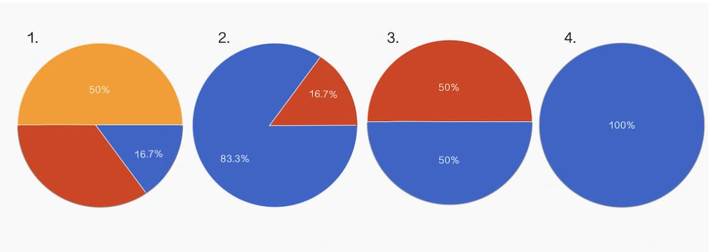
Did you notice an increase in followers right after your collaboration?
Do you want to pursue music as a career?
Has anybody ever asked you to collaborate?
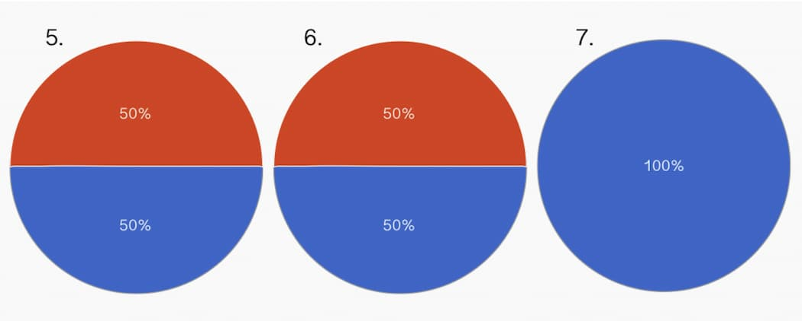
Can you list all of the platforms (or ways) you use to find collaboration
opportunities (SoundCloud, Facebook, etc)
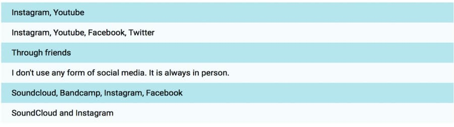
Do you take into consideration any of these things when searching for a
collaboration opportunity?
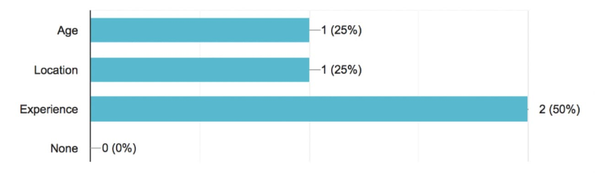
02
Brief
Through the data that I gained from the survey, it was evident to me that
there was room for improvement in SoundCloud design to help small artists
to gain more exposure through the app and make the collaboration process
less difficult. After going through all of my results from the survey, I brainstormed
some ideas and came up with the final brief to formalize my ideas:
By using Screenshots from SoundCloud’s mobile application, I was able to
gain a better understanding of how a user goes from screen to screen in
order to incorporate my design into the existing flow.
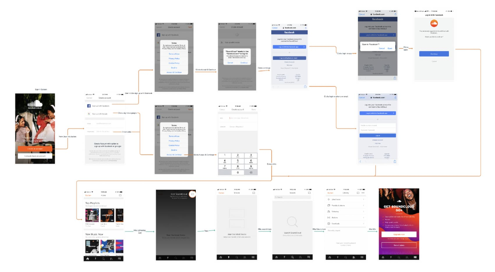
04
Low Fidelity Wireframe
In order to map out my new design, I created a low fidelity wireframe
that helped me to visualize the new process and ensure that new features
were properly incorporated.
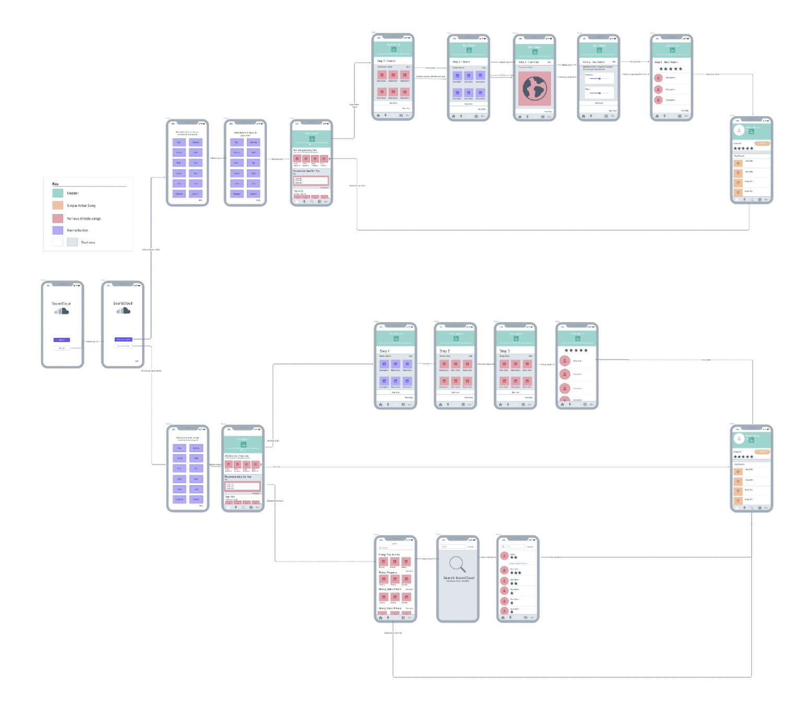
05
Observation of SoundCloud's Mobile App Screens
I analyzed the existing SoundCloud layout and design in order to
preserve the style throughout my redesign. Below are screenshots of the
current app:
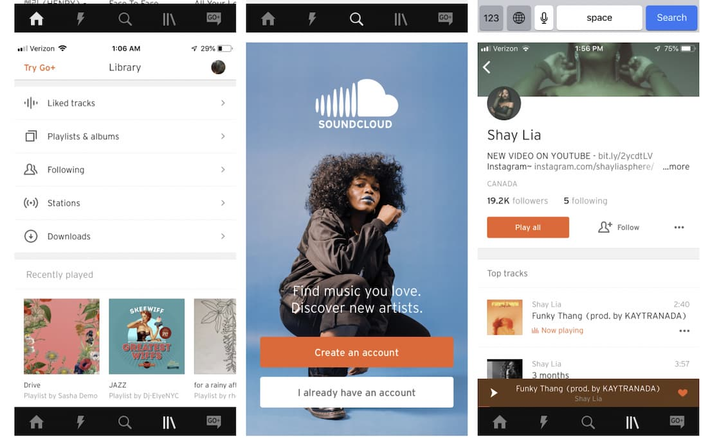
06
High Fidelity Design
Onboarding
When signing into the app, the user would get the choice to sign in or
create a new account. Since I decided to only cater my design to new
users, the only option would be to create an account. This would then
lead to either signing up as a listener or a creator since the two
experiences are very different for my app.
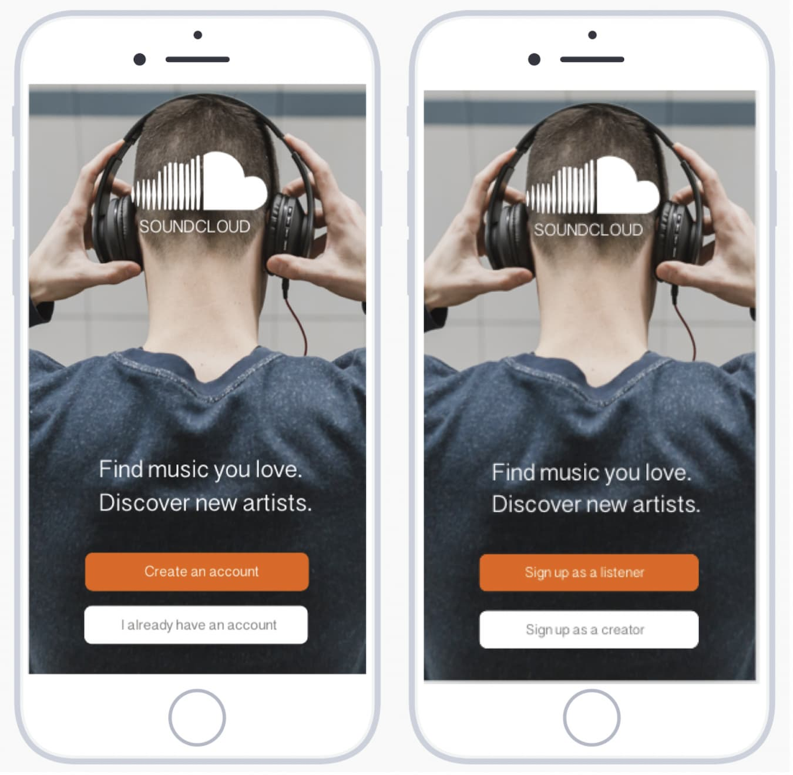
If the user selects listener, the next step would be to pick a genre of
music which they like to listen. When the listener selects a genre, the
box will get outlined in orange. This feature is beneficial for the
listener because they can be exposed to more of the music that they enjoy
on their homepage, but it is also beneficial to small artists because it
narrows the range of music that a user can see, making it more likely for
the small artist to be discovered.
If a user selects the creator option on the second screen, they would get
the option to pick a genre which they make music in. When the user selects
a genre, the box will be outlined in orange.
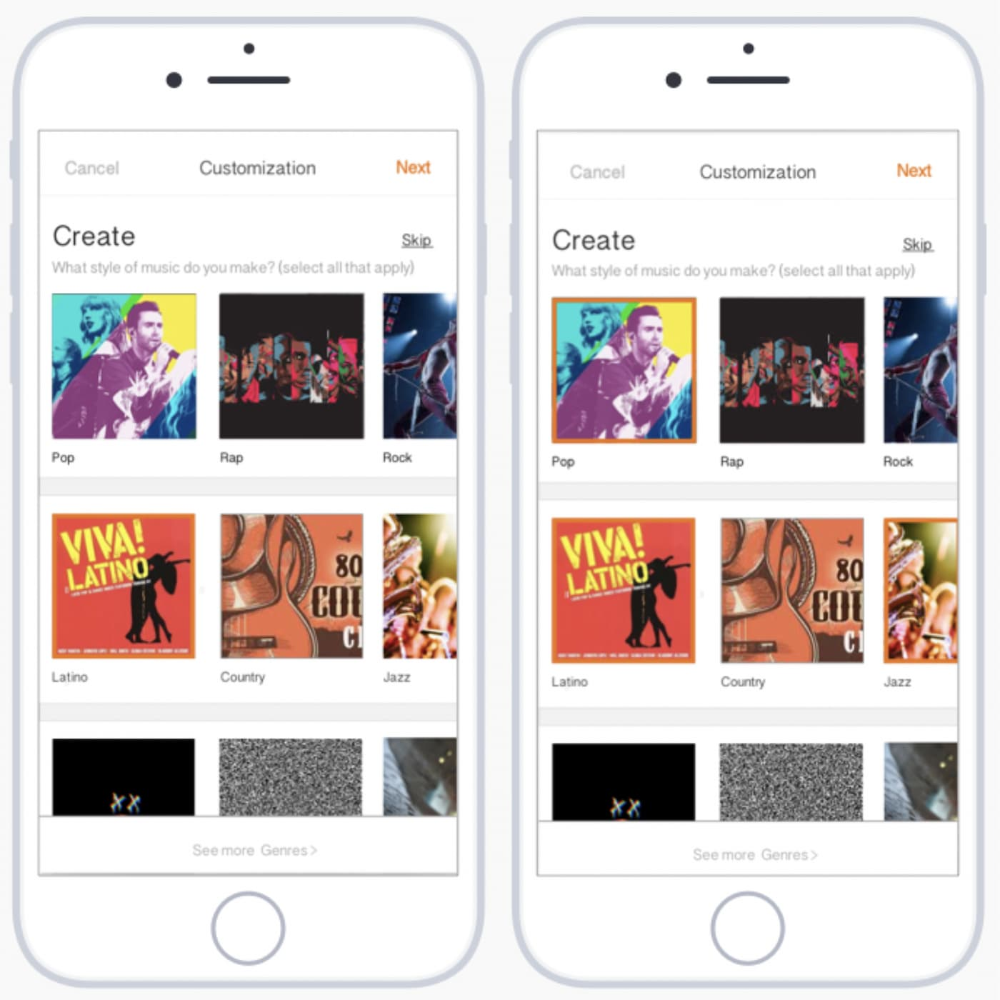
07
Best Match: Listener
Step 1, 2, and 3 all narrow the results because a music genre and style
can include various moods to it, so these features guarantee the user
satisfaction and give way for them to find small artists in step 4. Step
4 includes a star ranking system which is based on what artists fit the
users criteria best at 5 stars and the worst at 1 star.
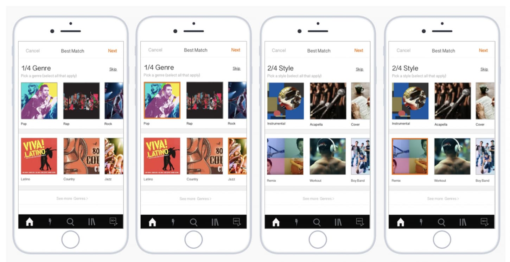
08
Best Match: Creator
The first two steps of finding the best collaboration partner for the
creator include picking what type of creator and genre of music they
want their collaboration partner to specialize in.
The 3rd step is used in order to see how many people are near the creators
area. The creator gets the freedom to choose how big or small the radius
of creators can be and how many people are in their radius. The pins in
the last slide are clickable so the creator can go to the specific artists
page
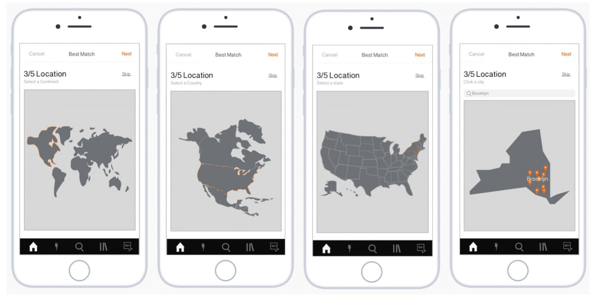
For the 4th step, the user can select the followers and plays range. Based
on what people have told me, this feature is useful for them to understand
the level of skill the artist has and whether or not they are a good fit
for them. Step 5 is choosing the best match through a star rank system
which is based on who fits the user’s criteria the most and will then lead
them to the artist’s page.
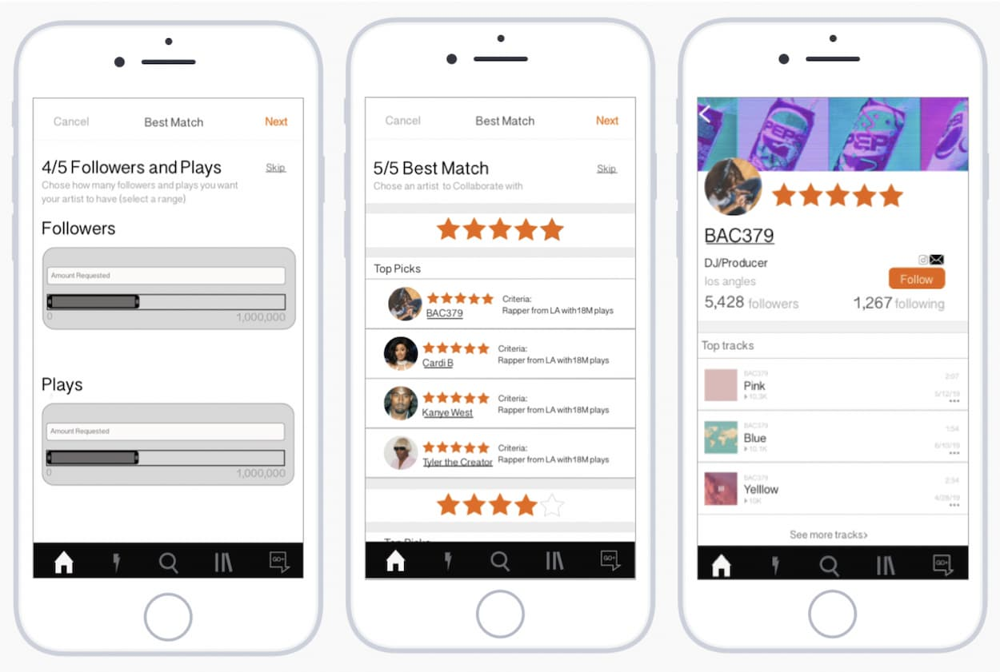
09
Artists you May Like
On the home page, I created another feature which is based on
SoundCloud’s “More of what you like” section where they suggest songs
based on what the user has liked or played. I based my section on
artists who collaborated with the artists of songs the user has recently
played or liked. This helps small artists gain more exposure and
listeners to find more songs that they could like.
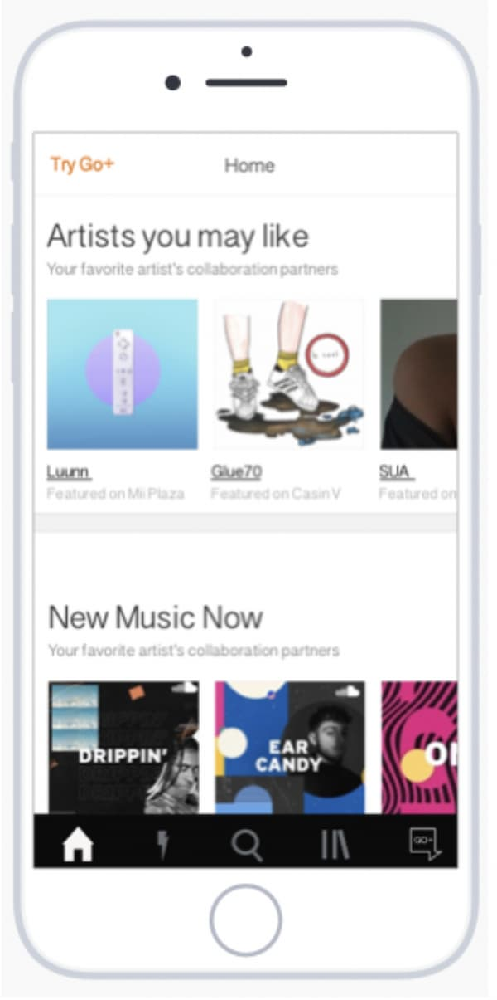
10
Explore Page
Artists will also be able to gain exposure through the explore page.
Before the user starts typing, they will see rising artists from each
genre of music. After the user enters the artist or song, the search
engine will show that artist’s collaborators and they will have a star
rank next to their name. For creators, it reveals how good of a
collaboration partner they would be and for listeners it reveals how
well the artist would fit their music taste.